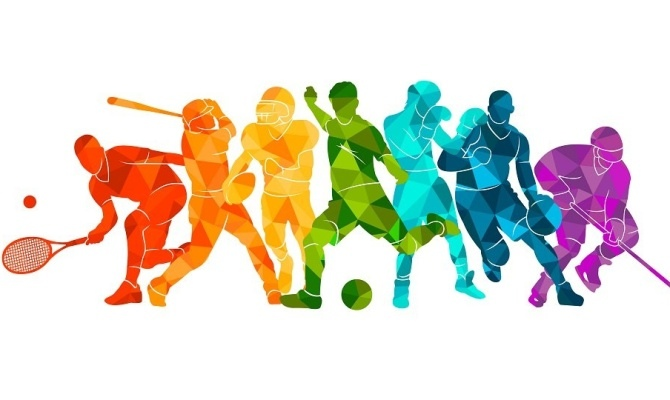
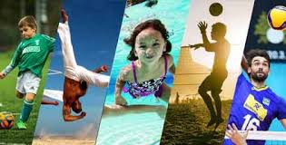

A prática regular de esportes oferece uma série de benefícios para a saúde física e mental. Além de melhorar a condição cardiovascular, fortalecer os músculos e aumentar a flexibilidade, os esportes também ajudam a reduzir o estresse, melhorar o humor e promover o bem-estar geral. Participar de atividades esportivas pode ser uma maneira eficaz de manter um estilo de vida saudável e equilibrado.

Os esportes são acessíveis a pessoas de todas as idades, desde crianças até idosos. Para os mais jovens, os esportes podem ajudar no desenvolvimento físico, social e emocional. Para os adultos, a prática de esportes pode ser uma ótima maneira de manter a forma física, aliviar o estresse e socializar. Para os idosos, os esportes adaptados podem ajudar a manter a mobilidade, melhorar a saúde cardiovascular e promover um envelhecimento saudável. Independentemente da idade, os esportes oferecem uma oportunidade valiosa para melhorar a qualidade de vida e promover a saúde.
Existem muitos esportes populares em todo o mundo, cada um com suas características únicas. O futebol é o esporte mais popular globalmente, seguido por esportes como basquete, tênis, vôlei e atletismo. Cada esporte oferece diferentes desafios e benefícios, permitindo que as pessoas escolham aquele que melhor se encaixa em seus interesses e habilidades.

Além dos benefícios físicos, os esportes também desempenham um papel crucial na saúde mental. A prática regular de atividades esportivas pode ajudar a reduzir os sintomas de ansiedade e depressão, melhorar a autoestima e promover um senso de comunidade. Participar de esportes em equipe, por exemplo, pode fortalecer os laços sociais e proporcionar um ambiente de apoio, o que é fundamental para o bem-estar emocional.